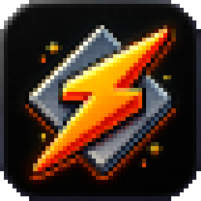
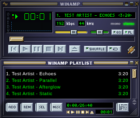
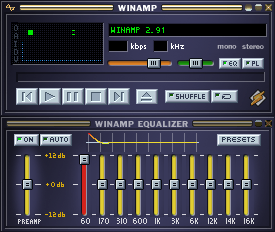

A Winamp-skinned player that follows Spotify and plays YouTube playlists. Unzip it and run it: no install, no admin rights.


Apple silicon and Intel. Unzip, then right-click Minapp.app → Open (first time only). It offers to copy itself to Applications. Uninstall Minapp.command in the same folder removes it cleanly.
Version 1.7.1. The first run downloads about 150 MB (Electron and Webamp) into the same folder. Everything stays in that folder.
.wsz, drag one onto the player or copy it into the skins folder and it appears in the menu. The corner logo opens skins.webamp.org for more. Mini mode, always-on-top pin, 0.5× to 3× size.Windows may show a blue "Windows protected your PC" screen the first time, because Minapp is a small unsigned program: click More info → Run anyway. Minapp then puts a Minapp shortcut on your Desktop and in the Start menu; start it from there and the message never comes back. To skip it entirely, right-click the zip → Properties → tick Unblock before unzipping.
The Spotify desktop app is required (not the web player). On Mac, macOS asks once whether Minapp may control Spotify. The Mac version does not have the Spotify equalizer or the visualizer yet, because macOS offers no system-audio capture without extra software.